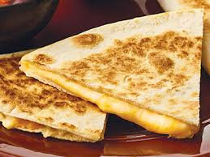

Quesadilla recipe

Description
Quesadillas are simple dishes with the option to add unique ingredients to mix up the flavors. A simple combination of melted cheese held inside a tortilla with different ingredients such as chicken or herbs can provide quite the pleasure to your taste buds. Simply melting some cheese over a tortilla may seem like a boring dish, but it can definitely be a good side dish or party appetizer.
Ingredients
- 1/2 teaspoon of butter
- Tortilla
- shredded cheese
Steps
- Get a pan and place it on the stove, medium heat
- place butter on pan and let melt
- once butter is melted, place tortilla on pan
- spread cheese onto half of the tortilla and let melt for 30 seconds
- fold tortilla in half, having the cheesy half on the pan and the other folded over
- let cook until cheese looks melted
- serve on plate and enjoy!